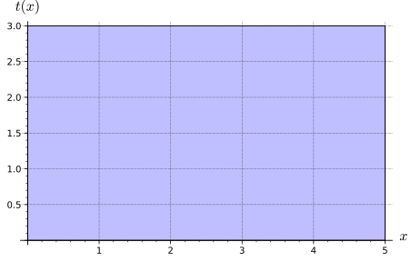

Given a multivariable function, I can compute its partial derivatives of any order, interpret their meaning in context, and use them to find the equation of the tangent plane to a surface
A metal rod lying along the \(x-\)axis is heated unevenly. Assume that its temperature is a function of its distance from the origin, so that the input is given by \(x\) cm and the output, \(t(x)\text{,}\) is given in degrees Celsius. The temperature of the rod is given in the table below.
\(x\) cm
0
1
2
3
4
5
\(t(x)\dc C\)
125
128
135
160
175
160
(a)
Which expression will approximate the derivative \(t'(2)\text{?}\)
Compute \(t'(2)\text{,}\) and include proper units.
Activity10.3.2.
Now consider an unevenly heated plate, whose corner lies at the origin, as in the image below.

The temperature at certain points is given by the table below.
3
85
90
110
135
155
180
2
100
110
120
145
190
170
1
125
128
135
160
175
160
0
120
135
155
160
160
150
0
1
2
3
4
5
Let \(T(x,y)\) give the temperature at a point on the plate, and let \(t(x) = T(x,y)\text{,}\) where \(y\) is a fixed number. \(x\) is measured in feet, and \(y\) is measured in meters.
(a)
In order to compute the rate of change at a specific point, we need to analyze how the function changes in a specific direction. We accomplish this by looking along specific vertical slices of the function.
Fix \(y=1\text{,}\) so that \(t(x) = T(x,1)\text{.}\) Which expression correctly identifies \(t'(2)\text{?}\)
Compute the rate of change in the \(y-\)direction, and include appropriate units.
Definition10.3.1.Partial Derivative.
Let \(f(x,y)\) be a function of two variables. The partial derivative of \(f\) with respect to \(x\text{,}\) written as \(\dfrac{\partial f}{\partial x}\) or \(f_x(x,y)\text{,}\) is given by the limit
The partial derivative of \(f\) with respect to \(y\) is written as \(\dfrac{\partial f}{\partial y}\) or \(f_y(x,y)\text{,}\) and is given by the limit
The partial derivatives \(\dfrac{\partial f}{\partial x}(x,y)\) and \(\dfrac{\partial f}{\partial y}(x,y)\) are called first-order partial derivatives.
Activity10.3.4.
Let \(f(x,y) = y^3+2x^3+x^3y^2-2y^2\text{.}\)
(a)
Compute \(f_x(1,2)\text{.}\) What does this quantity tell you about how the function is changing at \((1,2)\text{?}\)
(b)
Compute \(f_y(1,2)\text{.}\) What does this quantity tell you about how the function is changing at \((1,2)\)
Activity10.3.5.
Let \(g(x,y,z) = ye^{3x}+x^2y^2z^2\text{.}\)
(a)
Compute \(\dfrac{\partial g}{\partial x}\bigg\rvert_{(1,1,0)}\text{.}\) What does this quantity tell you about how the function is changing at \((1,1,0)\text{?}\)
(b)
Compute \(\dfrac{\partial g}{\partial y}\bigg\rvert_{(1,1,0)}\text{.}\) What does this quantity tell you about how the function is changing at \((1,1,0)\text{?}\)
(c)
Compute \(\dfrac{\partial g}{\partial z}\bigg\rvert_{(1,1,0)}\text{.}\) What does this quantity tell you about how the function is changing at \((1,1,0)\text{?}\)
Remark10.3.3.
A second-order partial derivative is similar to a second derivative from Calculus 1; however, now we must consider all possible second derivatives.
Activity10.3.6.
Consider a function of 4 variables, \(f(w,x,y,z)\text{.}\) How many second-order partial derivatives will \(f\) have?
2
4
8
16
Activity10.3.7.
Let \(f(x,y) = y^3 + 2x^3 + x^3y^2 -2y^2\text{.}\)
(a)
Find all first-order partial derivatives for \(f\text{.}\)
(b)
There are four partial derivatives of \(f\text{.}\) Compute them.
(c)
What relationship do you notice between the second partial derivatives?
Activity10.3.8.
Compute all four second partial derivatives of the function \(g(y,z) = y^2-z^4+yz\cos(y^2)\)
Remark10.3.4.
The notation for second derivatives can be a little tricky. For a function of two variables, \(f(x,y)\text{,}\) there are four cases:
First derivative with respect to \(x\text{,}\) second with respect to \(x\text{:}\)\(f_{xx}(x,y)\) or \(\dfrac{\partial^2 f}{\partial x^2}\)
First derivative with respect to \(x\text{,}\) second with respect to \(y\text{:}\)\(f_{xy}(x,y)\) or \(\dfrac{\partial^2f}{\partial y\partial x}\)
First derivative with respect to \(y\text{,}\) second with respect to \(x\text{:}\)\(f_{yx}(x,y)\) or \(\dfrac{\partial^2f}{\partial x\partial y}\)
First derivative with respect to \(y\text{,}\) second with respect to \(y\text{:}\)\(f_{yy}(x,y)\) or \(\dfrac{\partial^2 f}{\partial y^2}\)
Functions with more than two inputs have a similar convention for notating their partial derivatives.
Definition10.3.5.Tangent Plane.
Let \(S\) be a surface defined by the differentiable function \(z = f(x,y)\text{,}\) and let \((x_0,y_0)\) be a point in the domain of \(f\text{.}\) Then, the equation of the tangent plane to \(S\) at \((x_0,y_0)\) is given by
\begin{equation*}
z = f(x_0,y_0) + f_x(x_0,y_0)(x-x_0) + f_y(x_0,y_0)(y-y_0)
\end{equation*}
The tangent plane is the best local linear approximation of the surface \(S\text{,}\) and contains all tangent lines to \(S\) at the point \((x_0,y_0,f(x_0,y_0))\)
Remark10.3.6.
The definition of a tangent plane is a natural extension of the linearization of a single-variable function at the input \(x_0\text{:}\)\(y = f'(x_0)(x-x_0) + f(a)\)
Activity10.3.9.
Consider the surface given by \(z = -9x^2-3y^2\text{.}\)
(a)
Compute the first-order partial derivatives for \(z\)
(b)
Use Definition 10.3.5 to compute the equation of the tangent plane at the point \((2,1)\text{.}\)